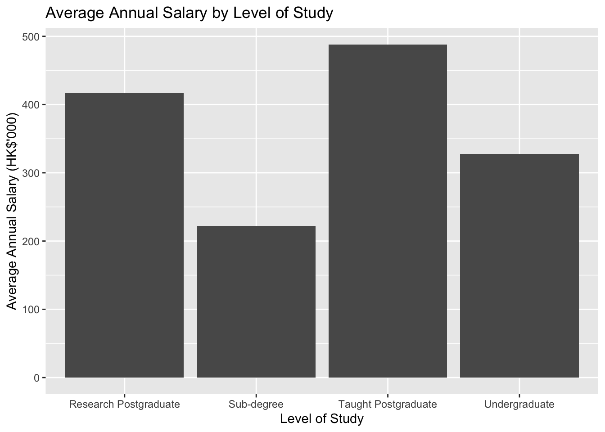
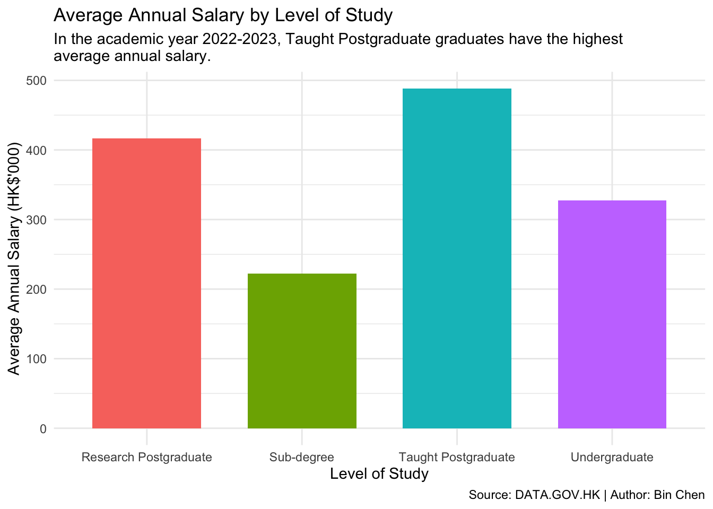
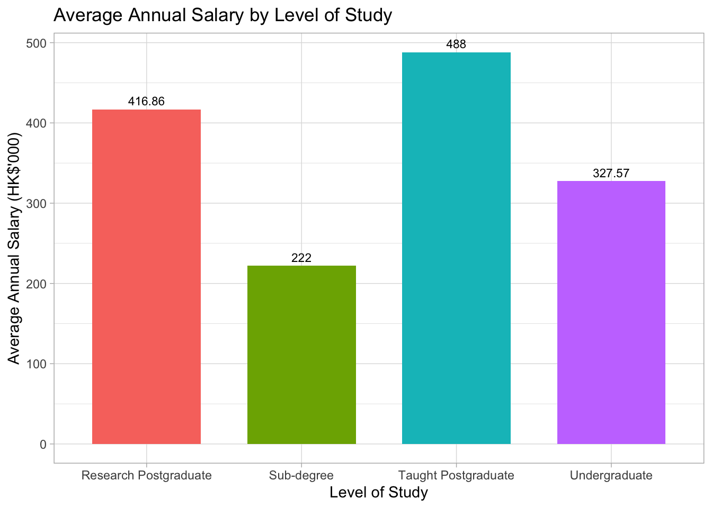
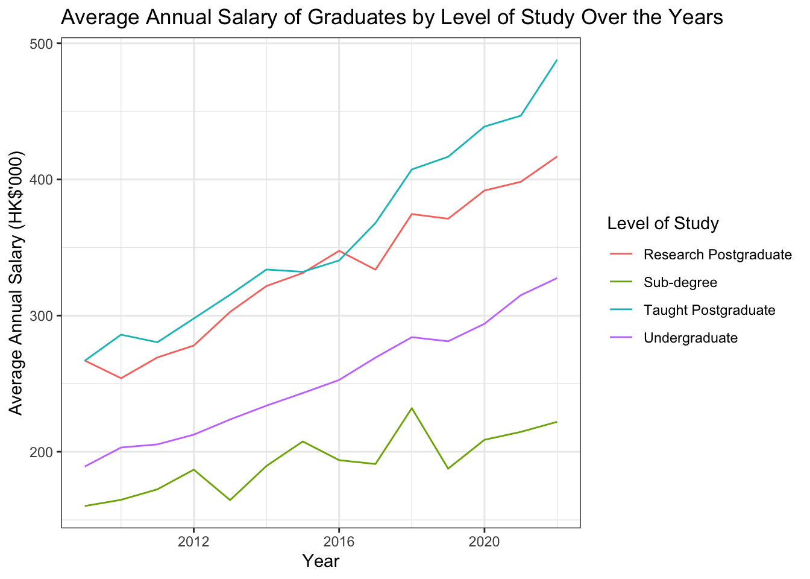
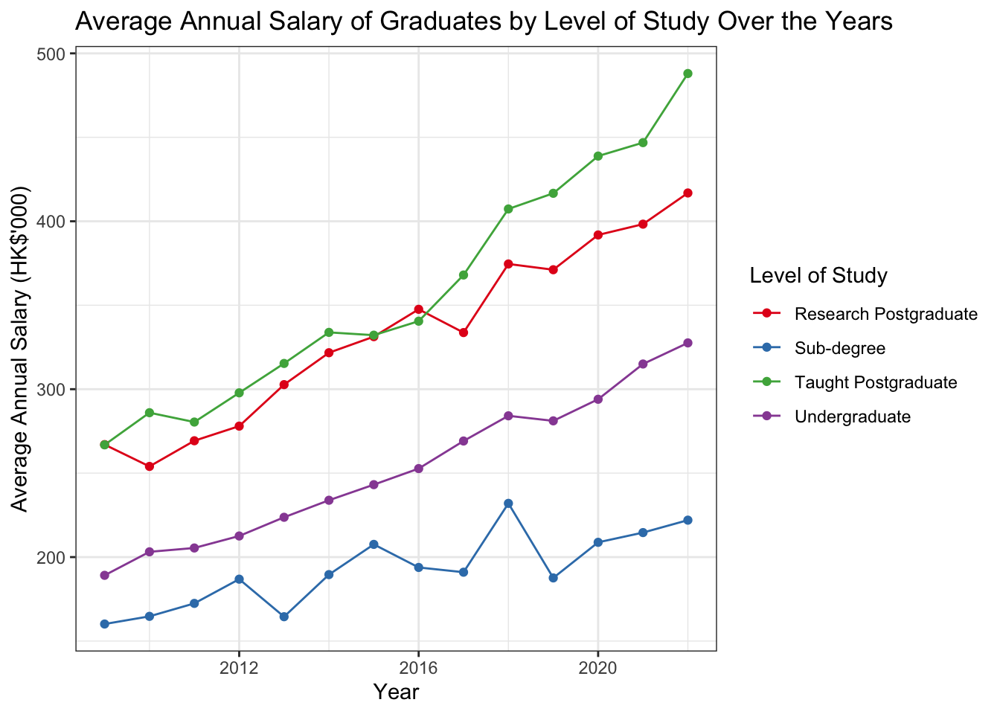
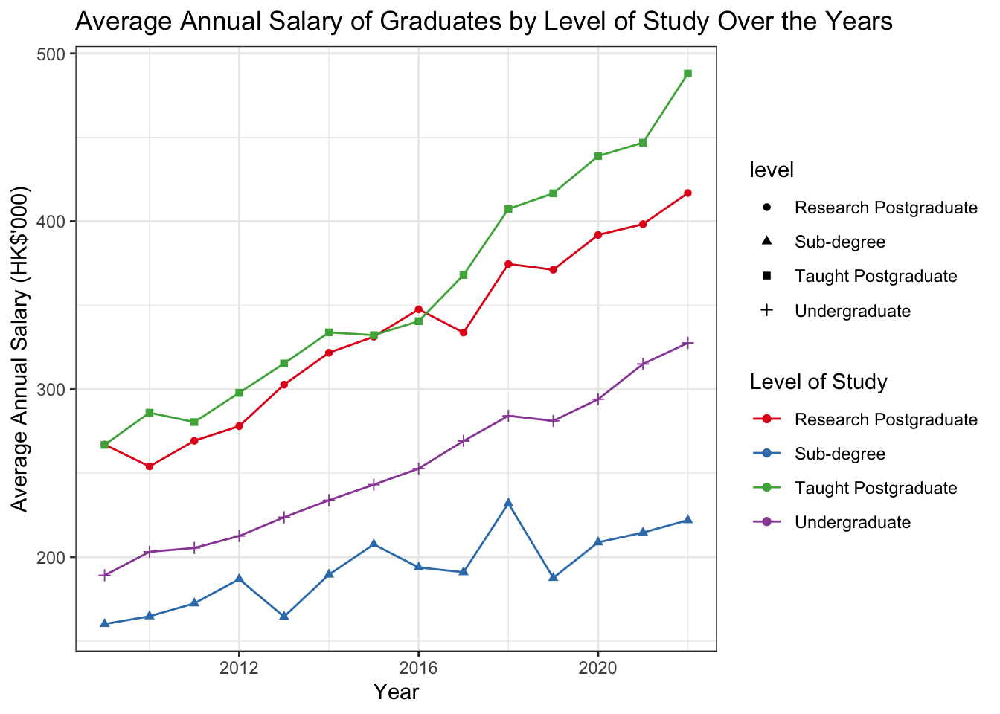
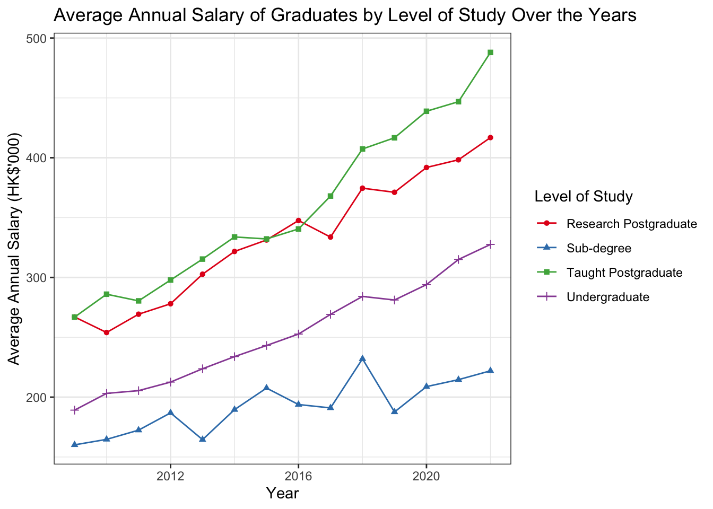

We will use the ggplot2 package to create visualizations for the data analysis results.
Here is the key components for using ggplot2:
ggplot(): create a new ggplot object
aes(): specify the aesthetic mappings: x-axis, y-axis, color, etc.
specific geom_ functions: geom_col() for bar chart, geom_point() for scatter plot, geom_line() for line chart, etc.
labs(): add titles and labels
there are two geom_ functions for bar chart: geom_col() and geom_bar(). By default, geom_col() is used when the height of the bar represents the value in the data, while geom_bar() is used when the height of the bar represents the count of cases in the data.
library(tidyverse)
── Attaching core tidyverse packages ──────────────────────── tidyverse 2.0.0 ──
✔ dplyr 1.1.2 ✔ readr 2.1.4
✔ forcats 1.0.0 ✔ stringr 1.5.0
✔ ggplot2 3.4.2 ✔ tibble 3.2.1
✔ lubridate 1.9.2 ✔ tidyr 1.3.0
✔ purrr 1.0.2
── Conflicts ────────────────────────────────────────── tidyverse_conflicts() ──
✖ dplyr::filter() masks stats::filter()
✖ dplyr::lag() masks stats::lag()
ℹ Use the conflicted package (<http://conflicted.r-lib.org/>) to force all conflicts to become errors
load("out/hksalary_cleaned.RData")
7.2 Bar Chart: Average Annual Salary by Level of Study
1df_clean |>2filter(year ==2022) |>3group_by(level) |>4summarise(avg_salary =mean(salary)) |>5ggplot(aes(x = level, y = avg_salary)) +6geom_col() +7labs(title ="Average Annual Salary by Level of Study",x ="Level of Study",y ="Average Annual Salary (HK$'000)")
1
Use the pipe operator |> to chain the operations.
2
Use filter() to select the data for the most recent academic year, 2022.
3
Use group_by() to group the data by the level column.
4
Use summarise() to calculate the average salary for each group.
5
Use ggplot() to create a new ggplot object and specify the aesthetic mappings using aes().
6
Use geom_col() to create a bar chart.
7
Use labs() to add titles and labels to the plot.

Important
Notice, we use + rather than |> to add a new layer to the plot. This is because ggplot() is a function that creates a new ggplot object, and geom_col() is a function that adds a new layer to the plot. We use + to combine multiple layers in the plot.
We can add more customization to the plot, such as changing the color of the bars, adding labels, and adjusting the theme.
More Customizations:
We can add more customization to the plot, such as changing the color of the bars, adding labels, and adjusting the theme.
df_clean |>filter(year ==2022) |>group_by(level) |>summarise(avg_salary =mean(salary)) |>1ggplot(aes(x = level, y = avg_salary, fill = level)) +2geom_col(width =0.7) +labs(title ="Average Annual Salary by Level of Study",subtitle =str_wrap("In the academic year 2022-2023, Taught Postgraduate graduates have the highest average annual salary."),x ="Level of Study",y ="Average Annual Salary (HK$'000)",3caption ="Source: DATA.GOV.HK | Author: Bin Chen") +4theme_minimal() +5theme(legend.position ="none")
1
Use fill = level in aes() to color the bars by the level column.
2
Use geom_col(width = 0.7) to adjust the width of the bars to make them thinner.
3
Use labs() to add a subtitle and caption to the plot.
4
Use theme_minimal() to apply a minimal theme to the plot.
5
Use theme(legend.position = "none") to remove the legend from the plot.

Tip
You can explore more themes and customize the plot further using the theme() function. Common themes include theme_bw(), theme_classic(), theme_minimal().
Adding values to the bars
Adding values to the bars can help readers better understand the data. We can use the geom_text() function to add text labels to the bars. However, the values of average salary are too long to be displayed on the bars. We can just show the rounded values by using the round() function.
df_clean |>filter(year ==2022) |>group_by(level) |>1summarise(avg_salary =round(mean(salary), 2)) |>ggplot(aes(x = level, y = avg_salary, fill = level)) +geom_col(width =0.7) +2geom_text(aes(label = avg_salary), vjust =-0.5, size =3) +labs(title ="Average Annual Salary by Level of Study",x ="Level of Study",y ="Average Annual Salary (HK$'000)") +theme_light() +theme(legend.position ="none")
1
Use round(mean(salary), 2) to round the average salary to two decimal places.
2
Use geom_text() to add text labels to the bars. The vjust = -0.5 argument adjusts the vertical position of the labels, and the size = 3 argument adjusts the font size of the labels.

Color Palette
You may find the default color palette not visually appealing. You can customize the color palette using the scale_fill_manual() function to specify the colors for the four bars.
## specify four colorscolors <-c("#FF6F61", "#6B5B95", "#88B04B", "#F7CAC9")df_clean |>filter(year ==2022) |>group_by(level) |>summarise(avg_salary =mean(salary)) |>ggplot(aes(x = level, y = avg_salary, fill = level)) +geom_col(width =0.7) +labs(title ="Average Annual Salary by Level of Study",x ="Level of Study",y ="Average Annual Salary (HK$'000)") +1scale_fill_manual(values = colors) +theme_minimal() +theme(legend.position ="none")
1
Use scale_fill_manual() to specify the colors for the bars using the values argument.
7.3 Line plot: Average Annual Salary by leveland by year_start
df_clean |>1group_by(year, level) |>2summarise(avg_salary =mean(salary)) |>3ggplot(aes(x = year, y = avg_salary, color = level)) +4geom_line(aes(color = level)) +5labs(title ="Average Annual Salary of Graduates by Level of Study Over the Years",x ="Year",y ="Average Annual Salary (HK$'000)",color ="Level of Study") +6theme_bw()
1
Use group_by(year_start, level) to group the data by year_start and level.
2
Use summarise() to calculate the average salary for each group.
3
Use ggplot() to create a new ggplot object and specify the aesthetic mappings using aes().
4
Use geom_line() to create a line plot.
5
Use labs() to add titles and labels to the plot.
6
Use theme_bw() to apply a black-and-white theme to the plot.
`summarise()` has grouped output by 'year'. You can override using the
`.groups` argument.

More Customization
df_clean |>group_by(year, level) |>summarise(avg_salary =mean(salary)) |>ggplot(aes(x = year, y = avg_salary, color = level)) +geom_line() +1geom_point() +2scale_color_brewer(palette ="Set1") +labs(title ="Average Annual Salary of Graduates by Level of Study Over the Years", x ="Year", y ="Average Annual Salary (HK$'000)", color ="Level of Study") +theme_bw()
1
Use geom_point() to add points to the line plot.
2
Use scale_color_brewer(palette = "Set1") to specify the color palette for the lines.
`summarise()` has grouped output by 'year'. You can override using the
`.groups` argument.

Tip
scale_color_brewer() provides a set of color palettes. You can specify the palette name to use different color schemes. It is automatically loaded when you load the ggplot2 package. A complete list of available palettes can be found in the RColorBrewer package documentation.
Specify aes() in multi-layer plots
In the previous examples, we specify the aes() function only in the main ggplot() function. However, you can also specify the aes() function in each geom_ function to customize the aesthetics for each layer.
For example, for the line plot, if we want to customize shape of points for each level, we can specify the shape aesthetics in the geom_point() functions.
df_clean |>group_by(year, level) |>summarise(avg_salary =mean(salary)) |>1ggplot(aes(x = year, y = avg_salary, color = level)) +geom_line() +2geom_point(aes(shape = level)) +scale_color_brewer(palette ="Set1") +labs(title ="Average Annual Salary of Graduates by Level of Study Over the Years", x ="Year", y ="Average Annual Salary (HK$'000)", color ="Level of Study") +theme_bw()
1
When you specify aes(color = level) in the main ggplot(), it applies the color aesthetic globally to both the geom_line() and geom_point() layers (or any subsequent geoms). This means that both the lines and the points will be colored by the level variable unless you override it in the individual geoms.
2
When you specify aes(shape = level) in geom_point(), it controls the shape of the points based on the level variable, but only for the points. The lines won’t be affected by the shape aesthetic because geom_line() doesn’t use shapes.
`summarise()` has grouped output by 'year'. You can override using the
`.groups` argument.

However, you will see we created a separate legend, this is because we specified the shape aesthetics in the geom_point() function. In this case, we can do this:
df_clean |>group_by(year, level) |>summarise(avg_salary =mean(salary)) |>ggplot(aes(x = year, y = avg_salary, color = level)) +geom_line() +geom_point(aes(shape = level)) +scale_color_brewer(palette ="Set1") +labs(title ="Average Annual Salary of Graduates by Level of Study Over the Years", x ="Year", y ="Average Annual Salary (HK$'000)", color ="Level of Study",1shape ="Level of Study") +theme_bw()
1
Add a shape = "Level of Study" in the labs() function, making both the color and shape legends appear as one unified legend, labeled “Level of Study.”
`summarise()` has grouped output by 'year'. You can override using the
`.groups` argument.

7.4 Practice
Make a bar chart to show the average annual salary of graduates by category for the most recent academic year (2022).
Make a line plot to show the average annual salary of graduates by category over the years.